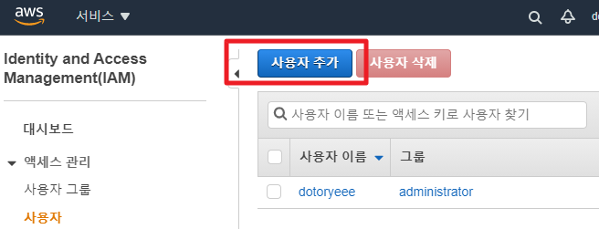

Circle-CI Basics
AWS S3
-
IAM에서 사용자 생성

-
콘솔 접근 권한은 필요없습니다

-
S3에 업로드하기 위해 S3 FA 권한을 부여합니다

-
사용자는 이름이 자동으로 적용되기 때문에 태그는 따로 추가하지 않습니다

-
이후 생성되는 AccessKey와 SecretKey를 복사합니다

-
CircleCI Projects에서 Project Settings에 진입합니다

-
Environment Variables에서 환경변수를 추가합니다

-
다음 그림과 같이 설정하면 됩니다

-
yml파일 위치는 다음과 같습니다
.circleci/config.yml -
config.yml내용은 다음과 같습니다
version: 2.1 orbs: aws-cli: circleci/aws-cli@1.3.1 aws-s3: circleci/aws-s3@2.0 jobs: deploy-s3: executor: aws-cli/default steps: - attach_workspace: at: . - persist_to_workspace: root: . paths: - . - run: ls /home/circleci/project - aws-s3/sync: arguments: --acl public-read aws-region: AWS_REGION aws-access-key-id: AWS_ACCESS_KEY_ID aws-secret-access-key: AWS_SECRET_ACCESS_KEY from: . to: "s3://nuspam-static/frontend" - aws-s3/copy: arguments: "--dryrun" from: . to: "s3://nuspam-static/frontend" workflows: deploy-frontend: jobs: - deploy-s3: filters: branches: only: main
AWS CodeDeploy for EC2
-
AWS CLI접속용 User에 CodeDeploy FA 권한을 부여합니다

-
IAM에서 CodeDeploy용 역할을 생성합니다

-
AWS CodeDeploy에서 어플리케이션을 생성하고 배포그룹을 만드는데, 앞서 생성한 역할을 적용합니다

-
배포 타겟에 인스턴스 이름을 사용하면 편리합니다

-
EC2 인스턴스에서 CodeDeploy 접근을 위한 역할을 생성합니다

-
EC2RoleforAWSCodeDeploy권한을 부여하면 됩니다

-
EC2 인스턴스에 해당 역할을 연결하고

-
EC2 인스턴스에 CodeDeploy 에이전트를 설치합니다
aws s3 cp s3://aws-codedeploy-ap-northeast-2/latest/install . --region ap-northeast-2 sudo yum install -y ruby wget chmod +x ./install sudo ./install auto sudo service codedeploy-agent start sudo service codedeploy-agent status -
CircleCI config.yml을 다음과 같이 적당하게 작성합니다
version: "2.1" orbs: aws-code-deploy: circleci/aws-code-deploy@2.0.0 aws-s3: circleci/aws-s3@2.0 aws-cli: circleci/aws-cli@1.3.1 jobs: deploy-step1: executor: aws-cli/default steps: - checkout - attach_workspace: at: . - persist_to_workspace: root: . paths: - . - aws-s3/sync: aws-region: AWS_REGION aws-access-key-id: AWS_ACCESS_KEY_ID aws-secret-access-key: AWS_SECRET_ACCESS_KEY from: . to: "s3://nuspam-static/backend/" workflows: deploy_application: jobs: - deploy-step1 - aws-code-deploy/deploy: requires: - deploy-step1 application-name: nuspam-api bundle-bucket: nuspam-static bundle-key: app deployment-group: api-server service-role-arn: arn:aws:iam::737382971423:role/Role_for_codedeploy filters: branches: only: main -
CircleCI에서 작업이 완료되면

-
AWS CodeDeploy에서 배포현황을 확인할 수 있습니다

-
인스턴스 초기에 python3 정지하는 스크립트 에러가 발생할 경우 다음과 같이 스크립트를 작성하면 됩니다.
#!/bin/bash if pgrep -x python3 >/dev/null then sudo kill $(pgrep -f python3) else exit 0 fi -
배포 후 flask가 종료되버리는 경우 다음과 같이 명령 마지막에 & 을 삽입해 백그라운드에 동작을 유도하면 됩니다